Progress
Stages
- Stage 1: map + baseline. ARCHITECTURE.md refreshed, perf/baseline.md, design/before/ (20 shots). Reviewed: 4 measurement bugs in perf/routes.mjs fixed; baseline re-shot from ../meridian-base (done).
- Preview infra: src/app/demo.ts + demoSeed.ts, vite
--mode demo, scripts/preview.mjs. PUBLISH BLOCKED (auto mode: push to main = prod deploy); local main worktree ../meridian-pages has unpushed cb0e018. Updates go out as design/progress.html via SendUserFile + PushNotification. Stage 4 contract frozen: docs/redesign-contract.md - Stage 2: perf top 5 done (perf/stage2.md). Home usable seeded 955 -> 525 ms, main JS 100 -> 70 KB gz. LCP 1.7 -> 2.9 s (Lighthouse now scores Today; fix = prerendered shell, Stage 4/6). Reviewed: numbers reproduce; lazy-chunk retry fixed (reload into tab, D16), intro focus trap + replay fixed.
- Stage 3: design system done + reviewed (D9 to D11, D20). Fixes applied: root 100%, progress fill, rule-strong, row inset. Stage 5 TODO: inputs >= 16px then drop maximum-scale; critique items.
- Stage 4: built, reviewed (2 reviewers), fix round done (D24). 844 tests pass. Prep done: src/features/paths/types.ts; course data split into src/content/math.ts + cs.ts (curriculum.ts derives, pinned by curriculum.test.ts + fixture). RUNNING: 4 agents (Today+weather owns today/, PathCard, weather.ts, routing, index.html shell, routes.mjs; WGU owns paths/wgu.ts + WGURoadmap header; Math owns content/math.ts MATH_DAILY + paths/math.ts + MathPath.tsx; CS owns paths/cs.ts + CSPath.tsx).
- Stage 5: done. Lighthouse perf 96 / a11y 100 (perf/stage5-perf.md), export bug fixed, PageHead everywhere (D28-D31). SecHero.tsx unused, owner to delete.
(history) 3 restyles done (D22, D23, D25). Cleanup done; BUGS.md merged (54 fixed, 2 open: A19 legend, TR-15 tooling). Stage 5 reviewed (D27); review-fix agent RUNNING (export P1, consistency, perf margin -> perf/stage5-perf.md, re-shoot design/after). Then Stage 6.
- Stage 6: verified + regressions fixed (perf/after.md). Lighthouse 96/100. npm run verify exit 0 (866 tests). REDESIGN.md + COMMITS.md written; all 172 files staged (checkpoint + review.md left untracked).
- Publish preview (owner approved 2026-09-29): node scripts/preview.mjs --publish
Scoreboard
- Home usable, seeded (A/B median)
- 1,162 ms → 537 ms
- Home usable, empty (A/B median)
- 803 ms → 486 ms
- Lighthouse Performance (mobile)
- 99 → 96 target >= 90
- Lighthouse Accessibility (mobile)
- 84 → 100 target >= 95
- Lighthouse TBT
- 87 ms → 7 ms
- Worst INP proxy, seeded
- 256 ms → 152 ms
- Worst route CLS
- 0.065 → 0.000
- Main JS gzip
- 100.1 KB → 73.3 KB
- Main CSS gzip
- 22.2 KB → 15.2 KB
- Contrast pairs failing AA
- not checked → 0
Screens


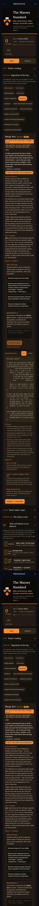
before

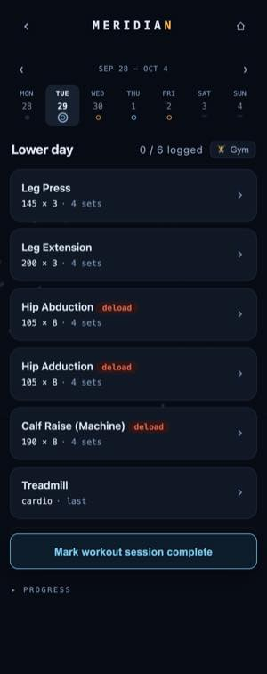
before
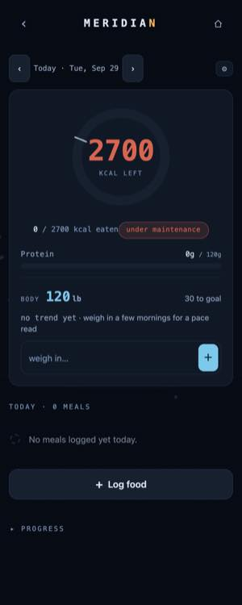
before
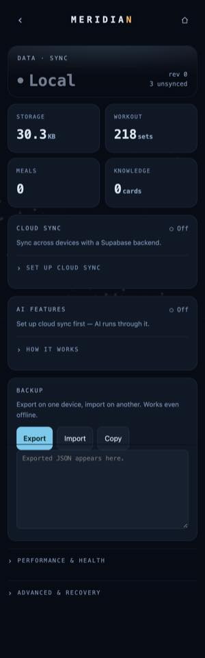
before
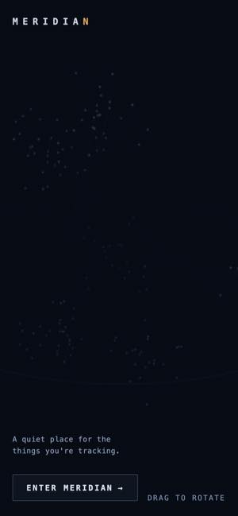
before


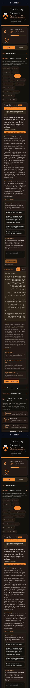
before
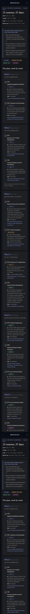
before
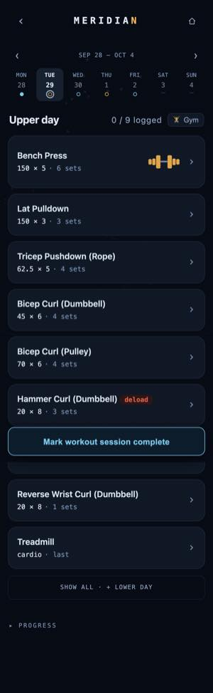
before
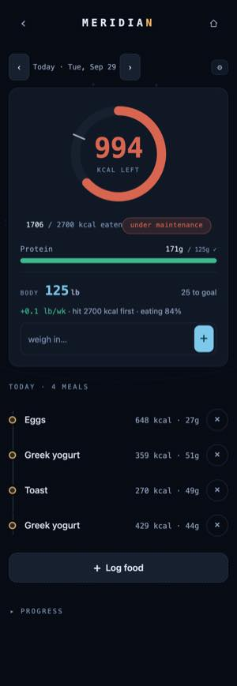
before
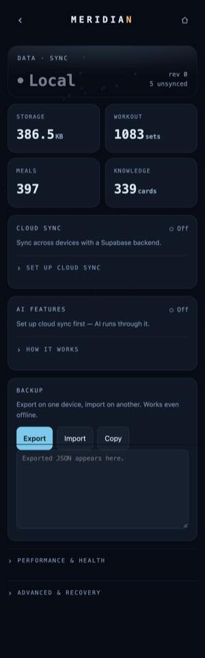
before

 after
after


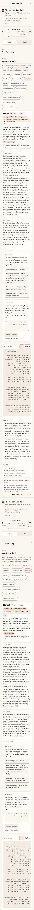
after after
after

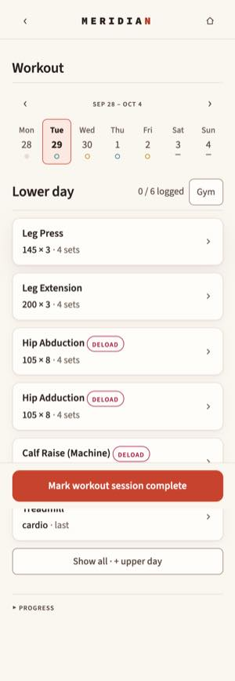
after
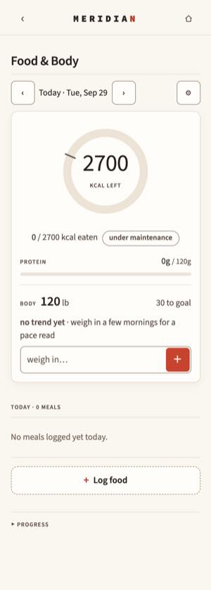
after
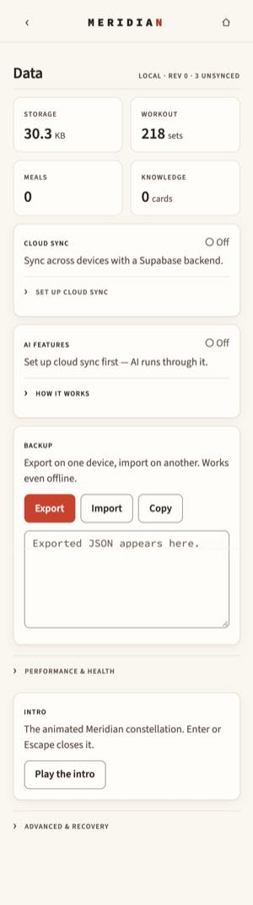
after after
after
 after
after

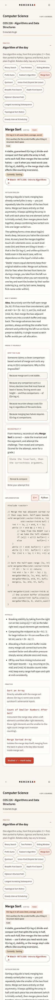
after after
after

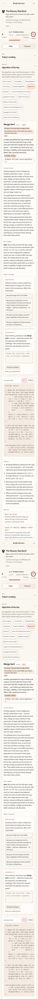
after

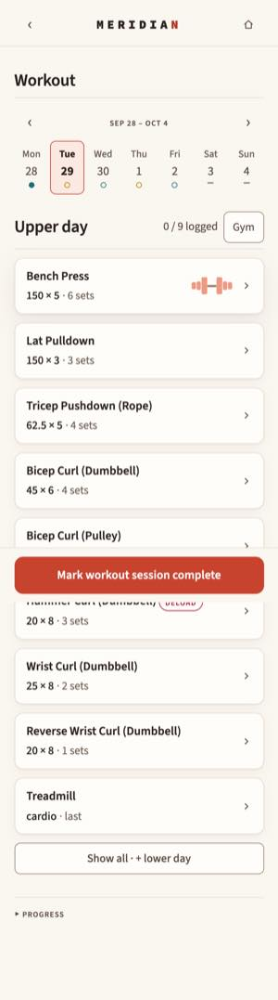
after
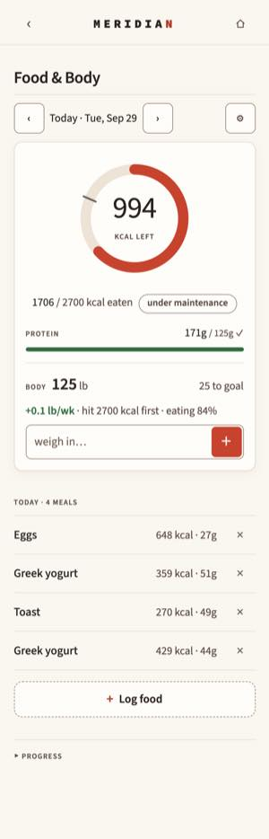
after
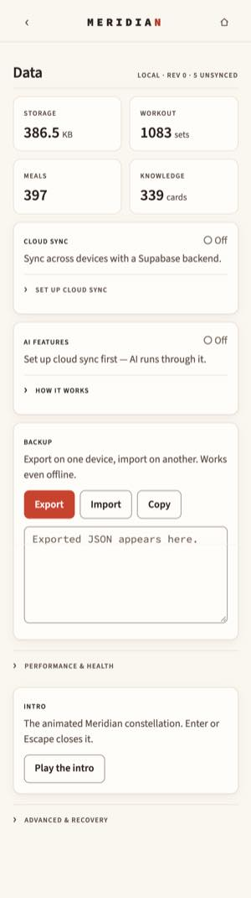
afterDecisions
DECISIONS.md
Redesign decisions
Every decision made during the autonomous redesign run, with the reason. Newest at the bottom of each stage.
Setup (2026-09-29)
D1. Mobile updates use a GitHub Pages preview, not a tunnel.
The owner asked for "a mechanism we have used in the past" instead of the Cloudflare tunnel. That mechanism is a seeded build published at /meridian/preview/<name>/ (used for the Rail and Knowledge flow previews in August). The redesign preview lives at https://clz4096.github.io/meridian/preview/redesign/. Publishing it means committing only public/preview/redesign/** (plus the two service-worker exclusions in D3) to main and pushing. The app code on main does not change. A push notification goes out after each stage.
D2. The preview runs on demo data only.
Owner's choice. The preview shares an origin with the live app, so it would otherwise read the real localStorage, IndexedDB and Supabase credentials. A demo build (VITE_DEMO=1) therefore:
- prefixes every
localStoragekey and uses its own IndexedDB database, so it can never read or write real data, - turns cloud sync off (no Supabase calls),
- seeds a year of synthetic data on first open (same generator as the perf harness).
No passcode, per the owner.
D3. The live app's service worker must not swallow the preview.
Workbox's navigation fallback serves the app's index.html for every navigation under /meridian/, which would show the live app at the preview URL on a phone that has Meridian installed. The preview commit adds navigateFallbackDenylist: [/\/preview\//] and globIgnores: ['preview/**'] to the Workbox config, so the live app neither intercepts nor precaches preview files.
D4. Node reinstalled.
Node and npm had disappeared from this Mac (it worked on 09-24). Installed the official Node 22.23.3 x64 build into ~/.local/node after verifying its SHA-256 against nodejs.org's SHASUMS256.txt. No sudo, no package manager changes.
D5. Measurements are taken on this machine (Intel i7-8750H).
The 09-24 baseline in the old checkpoint was on another machine, so it is not comparable. Stage 1 re-measures from scratch; every later number compares against that.
D6. Publishing the preview is on hold until the owner approves the push.
Auto mode blocked git push origin main as a production deploy (it triggers the Pages workflow). I did not work around it. Updates now go out as a push notification plus a self-contained progress page sent as a file to the chat (design/progress.html, screenshots inlined). The publish is ready:
- the
mainworktree at../meridian-pagesholds one local, unpushed commit,cb0e018(service-worker/preview/exclusions, D3), node scripts/preview.mjs --publishadds the preview files and pushes.
To drop the local commit instead, run git -C ../meridian-pages reset --hard origin/main.
Stage 1
D7. The baseline was re-shot after review.
The Stage 1 reviewer found four measurement bugs in perf/routes.mjs:
- Byte counts missed requests the service worker served.
- Route CLS was always 0, because a tap marks shifts as recent input.
- The INP proxy was read before Event Timing entries arrived.
- Sections were captured mid-scroll.
All four are fixed. The service worker is now bypassed, route CLS counts every shift in the transition window, the script waits 800 ms before reading events, and it scrolls to the top before each capture. Open time now starts at the tap's own event timestamp, and device scale matches run.mjs (3x). The baseline is re-measured from a clean worktree of e7ff8d2 (../meridian-base), so Stage 2's uncommitted changes can't leak into it.
D8. Design exploration overlaps Stage 2, and measurements stay isolated.
To save wall-clock time while the owner is away, the Stage 3 design agent started while Stage 2 was still measuring. It only creates new files (tokens, fonts, the contrast script, the style guide page) and is barred from launching Chrome, so it can't change Stage 2's numbers. Its output is wired into the app only after Stage 2 is measured and reviewed, so the stage order the brief asked for still holds for everything that ships.
Stage 2
D14. The five changes follow the audit ranking, with two declines.
perf/stage2.md has the details. Declined:
- Moving
ts-fsrsout of the main chunk: Today's mastery % needs it. - Moving
dataSelectorsout: the Data tile's size figure needs it. - Removing
maximum-scale=1: inputs are under 16 px and iOS would zoom on focus. Revisit once the design system sets inputs to 16 px or more.
D15. Lighthouse LCP got worse on paper, and the fix is deferred.
LCP went from 1.7 s to 2.9 s because Lighthouse now scores Today (rendered by JS) instead of the static landing. Performance is still 95, above the 90 target. A prerendered static shell for Today (date, weather skeleton, section frames in index.html) would bring LCP back. It is scheduled with the Today rebuild in Stage 4, where the shell's markup is being designed anyway.
D16. A failed lazy chunk now recovers by reloading into that screen.
Found by the Stage 2 reviewer. Chrome caches a failed module import for the life of the page, so retrying import() could never succeed. That meant one failed idle prefetch broke that screen for the whole session. "Try again" now stores the tab in sessionStorage, reloads, and reopens it. Verified by blocking the Knowledge chunk during prefetch, then unblocking: the tap shows the error, and Try again lands on a working Knowledge screen. The intro also got a focus trap (Tab stays on Enter under aria-modal), and replaying it during its 550 ms fade-out now works instead of being ignored.
Stage 3
D9. Fonts: Source Sans 3 and Source Code Pro.
Both are variable (weights 200 to 900), latin subset, OFL, from @fontsource-variable 5.3.0. They come to 2 files, 50.8 KB total. The runners-up were IBM Plex (86 KB) and Fira (89 KB).
- Source Sans digits line up in columns by default, and the mono was drawn as its companion.
- Its x-height is small, so body text is 17px.
- None of the subsets include real small-caps glyphs, so labels use browser-synthesized small caps.
Details: design/palette-decision.md, src/assets/fonts/README.md.
D10. Palette A, "Cream and Coral", is the default.
Variant B, "Ember", stays on /styleguide. A wins 6 of the 8 stated criteria, ties 1, and loses only on warmth. The criteria that decided it:
- Weakest text pair: 4.89:1 (A) vs 4.54:1 (B).
- Background calm: Lab chroma 3.4 vs 7.0.
- Chart series under simulated deuteranopia: minimum color distance 18.0 vs 6.4.
- Glare simulation: A holds up better.
All 41 pairs per variant pass WCAG AA (design/contrast.md; scripts/contrast.mjs, enforced by a vitest test).
D11. #/styleguide is a full page load until Stage 5.
tokens.css reuses names the old dark :root also defines (--bg, --surface-2, --ok), so loading both in one page lets whichever loads last win. Until Stage 5 retires the old tokens, main.tsx renders the style guide on its own when the page opens at #/styleguide, and reloads when you leave it. The reason changed in Stage 5; see D26.
Stage 4 (planning)
D12. New screens use only the new tokens; the old dark tokens are retired in Stage 5.
From Stage 4 on, tokens.css and primitives.css load globally, after app.css. The new Today and path screens use only the new tokens. Until Stage 5 remaps the old tokens (design/token-map.md), the untouched tabs look mixed, with a cream background under dark cards. That is acceptable on the branch because nothing is published or merged between the two stages, and it keeps the new screens from depending on tokens that are about to disappear. D11's full-page style guide becomes unnecessary once Stage 5 lands.
D13. Path content loads lazily from Today.
The algorithm catalog, papers, and curriculum live in the tracker chunk (about 58 KB gzip). Today's reading and path cards import them lazily behind a skeleton, and they are prefetched at idle. This keeps the main chunk within 8 KB of the Stage 2 size (a contract gate).
D17. The Stage 3 review overlaps the start of Stage 4.
The Stage 3 reviewer checks tokens, fonts and the style guide while the four Stage 4 agents build (Today + weather, WGU, Math, CS). They own disjoint files per docs/redesign-contract.md, so they can run at once. If the review changes a token's value, the Stage 4 screens pick it up automatically, because they use token names and never raw colors. A renamed token would need a follow-up pass, and none is planned.
D20. Stage 3 review fixes.
- The html root font size is back to 100%: the old
app.css15px root put body text at 15.9px and meta text at 13px. This also enlarges the old tabs' rem-based text by 1/15; Stage 5 restyles them. - Progress fills now draw (
display: block; they were inline spans). --rule-strongis darker (A #948272, B #98786A), so hover and state borders pass 3:1 on--surface-2too, and that pair is now in the gate.- Rows are inset.
- The unused
--focus-ringtoken is gone. - Pairs that fail AA but aren't used are listed as forbidden in
design/token-map.md.
Deferred to Stage 5: inputs to 16px or more, then remove maximum-scale=1 (which also blocks pinch zoom, WCAG 1.4.4). Design critique items (chip pressed state, swatch grid orphans, spacing rhythm) go to the Stage 5 visual QA list.
Stage 4
D18. Math daily items gain a title field (contract extension).
The frozen item shape couldn't produce labels like "Proof: √2 is irrational". Items rotate at local midnight, alternating Stanford Stats (even days) with the other Math courses (odd days), so the course the owner is taking now appears every other day. There are 20 items: 8 statistics, 3 probability, 9 proofs. The Stage 4 reviewer checks every answer.
D19. CS and WGU paths follow the contract's summarize(now, state) shape.
- The CS
statealso carries the algorithm and whether it was studied today. CS_CURRENTinsrc/content/cs.tscan pin the current course; left null, the current course is the first one not done.- The WGU weeks gain machine-readable
startandenddates plusTERM_END, so the logic never parses display strings like "Sep 17 to 23". - The algorithm card on the CS screen reuses the Massey
AlgoOfDaycomponent, and keeps the tracker's dark palette until Stage 5.
D21. The Stage 4 review fix round runs alongside Stage 5.
Two independent reviewers found:
- no wrong math across the 21 items,
- three P1s: the CS algorithm rolled over at 8 pm (UTC day), path screens opened mid-scroll, and the Lighthouse harness couldn't finish with the new Today,
- several P2 and P3 items.
One fix agent handles all of them in the Today, paths, weather, logic and harness files. At the same time, three Stage 5 restyle agents work in disjoint files, split by stylesheet: app.css; studytracker.css; and wgu.css with the WGU markup. Findings that land in a Stage 5 file go to that stage's agents: the dark palette on the CS algorithm card and WGU body, WGU targets under 44 px, the 15 px body text in app.css, and maximum-scale.
Measured at this point:
- Lighthouse mobile: Performance 92, Accessibility 94 (the only failing audit is
meta-viewport, which Stage 5 removes). - Main JS gzip: 72.7 KB (+2.8 KB over Stage 2).
- Weather states and offline routes pass. No NaN or undefined text on any screen.
Stage 5
D22. Princeton orange is retired as a color. The shield keeps the identity.
#E77500 measures 2.6 to 3.0:1 on every light surface, which fails even the 3:1 floor for non-text, so no AA-passing use exists. The coral tokens take the accent role, and the Princeton shield image stays as the tracker's identity mark. Code blocks stay plain text: there is no highlighter, and ink on --surface-2 is 13.4:1. Code keeps 14px mono, a deliberate exception to the 16px floor, because code isn't running prose and wider lines matter more there.
D23. The WGU assessment chips show dark text with a colored dot.
The data-series colors pass 3:1 as graphics but not 4.5:1 as text. The static title now reads "13 courses in a 37-day plan", so it no longer contradicts the live "25 days to Oct 24".
D24. Stage 4 review fixes.
- All three days roll over at local midnight:
algoOfDayandpaperOfWeekuselocalEpochDay, shared with Math. - Screens open at the top, and Back restores Today's scroll position.
perf/run.mjsuses the new selectors.- Seeded home render: about 100 ms → about 50 ms (4x throttle). The cause was the first
toLocaleStringcall loading ICU data (72 ms). The Food tile now formats withgroupThousands, which a property test checks againsttoLocaleString. - "Saved ✓" only shows after a user edit.
- Weather says "Offline" only when the device is. A forecast from an earlier day is labeled with its date.
- Main JS: 73.2 KB gzip (+3.2 KB over Stage 2).
D25. Old token names survive only as aliases.
The app.css restyle mapped every old token to the new system. The old names stay as aliases, because landing.css, studytracker.css, wgu.css and ui/host.ts still read some of them. Delete each alias once nothing reads it. No raw colors remain in app.css. Stage 5 also:
- removed
maximum-scale=1(all inputs are now 16 px or more), - made span click targets into real buttons,
- put every control at 44 px or more.
D26. #/styleguide keeps its separate render and its reload on leave.
Since D25 the old dark tokens are aliases of the new ones, so the style guide and the app no longer fight over --bg and friends, and D11's original reason is gone. The reload stays for a different reason: the style guide skips boot(), sync, telemetry and the external-link handler, so rendering <App/> in place would need a second, lazy boot path that a normal launch never exercises. A reload runs the one tested startup path, and the style guide is a design tool, not a user route, so the extra load costs nothing that matters.
D27. Stage 5 review: behavior is unchanged, and the fix round is about consistency and performance margin.
The reviewer compared the same seeded flows on the baseline and current builds. Stored state matched, and Data export was identical across 20,163 JSON nodes, with timestamps and ids masked. No failing text contrast on any screen. Lighthouse mobile: Accessibility 100, Performance 89 to 92.
The fix round:
- Export shows an empty box. A pre-existing bug: the textarea remounts after export, so Copy copied nothing.
- Remaining opacity fade. One Knowledge row still dimmed with opacity, failing contrast.
- Small targets and text. The remaining targets under 44 px and 14 px sentences.
- One design language. The Today section headers and one gutter everywhere. Warn and danger colors only for real warnings. No emoji or chart-colored decoration.
- Performance margin. Lighthouse LCP is the lazily loaded reading title. Candidates: render it in the first paint, preload fonts, split critical CSS. Each is kept only if measured.
D28. Every screen opens with the Today section header.
ui/components/PageHead.tsx renders a screen title in Today's section language: the heading, a hairline, and a small-caps note with the key figures as plain tabular data ("40 open · 2 due today"). It replaces the boxed hero numbers on Todos, Scratchpad, Data and Knowledge progress, and the page-size H1s on Knowledge, CS, Math and WGU. Food & Body and Workout gained the same head, so every screen opens with its title. The Massey Standard keeps its own eyebrow-over-title section heads inside the tracker. .m-title and .m-pagehead live in primitives.css. The path screens also dropped their own side padding, since .appwrap already supplies the gutter, so every screen uses the one --gutter. SecHero.tsx is now unused; it is left in place for the owner to delete.
D29. Warn and danger mean a real warning.
Normal states take ink or the accent. The mastery words are ink, and their dots use --series-1 (shaky) and --series-3 (learning) instead of --danger and --warn. The Food ring and protein bar are the accent until the target is met, then --ok. The calorie number turns --warn only when over. A todo due today is accent text; only overdue is --danger. Kept as warnings: overdue todos, weight trending down on a gaining plan, a Weak week, failed saves, and the Again grade.
D30. The Knowledge session sits under the app's brand row.
The session covered the whole screen with its own Back buttons. It now starts below the brand row (--brandrow-h), so Back and Home match every other screen. Behavior is unchanged: both of the session's Back buttons and the brand row's Back call window.history.back(), so the session's own were removed.
D31. Stage 5 performance: one fade was holding back LCP.
perf/stage5-perf.md has each run. The reading and path cards faded in from opacity 0, which kept Chrome from counting the reading title as painted until well after the forecast call and the idle prefetch had started; Lighthouse charged both to LCP. Without the fade, and with the two fonts preloaded, Performance is 96 and LCP 2.76 s (was 91 and 3.47 s in the same session). A static papers.ts, a prefetch gate and an open-meteo preconnect were measured and reverted; the CSS split was not attempted (cascade order, see the perf note).
Stage 6
D32. The two sync failures are reported, not fixed.
The Stage 6 verifier tested two-device sync against a local mock (never the real cloud). Two checks fail, identically on the baseline build:
- An edit to an existing item never reaches the other device.
unionByIdkeeps the local copy on an id collision. - Two devices pushing at the same moment lose one device's edits. The upsert has no compare-and-swap on
rev.
The sync code is byte-identical to e7ff8d2, so neither is a redesign regression. This is the sync redesign already open as an owner decision (checkpoint item 1: the engine owns the stores, or a three-way merge). Changing merge semantics is outside a visual and IA redesign, and needs the owner's call.
D33. Stage 6 regressions against Stage 2 go to a fix round before sign-off.
The brief requires no regression against Stage 2. The fix round covers:
- Todos opens slower (129 → about 220 ms seeded).
- The seeded JS heap after the tab tour is larger (13.3 → 19.0 MB, still under the 50 MB limit).
- A font-swap shift of 0.017 appears in the prerendered shell on slow networks.
- The test suite exits 1 on a stray autosave timer (the baseline also did).
All targets were already met: Lighthouse mobile Performance 96 and Accessibility 100; offline, empty-data and iPhone-width tests pass.